ennnnn，年薪20万的梦想是不是又进了一步：
循环，什么是循环，循环就是电池有电，手机屏幕可以循环一整天的使用；循环就是地球不毁灭，太阳日复一日的出现。。。。。。
不接受反驳，谢谢！~
只要条件满足，就不断循环，条件不满足，退出循环。。。
while 循环语法结构：（什么是条件判断？请看随笔目录，if条件判断相关笔记）
1 while 条件表达式： #条件成立，执行下面的循环体代码2 循环体
我们开始一个简单的例子：（假若条件一直成立，那么会一直循环，就是所谓的，根本停不下来的，死循环）
1 a = 2
2
3 while a >= 1: #条件一直成立，所以会一直循环输出下面的循环体部分的代码
4 print('上面条件成立，所以执行我') #循环体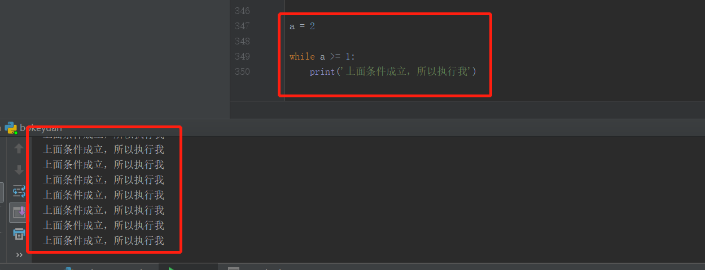
你还可以这样写死循环：
1 while True: #条件为真
2 print('True,因为条件为真，所以一直执行我') #循环执行
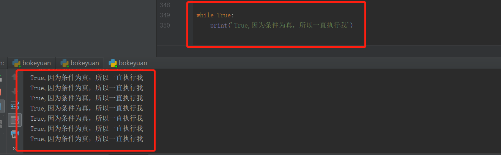
我相信你知道了基本的while循环语句的结构，我们尝试写一个不会死循环的，受控制的while循环。
1 a = 5
2
3 while a < 5: #条件：a只要小于5就一直循环
4 print('第 %s 次循环'%a) #计算循环的次数，while循环体内的代码，需要缩进4个空格哦。
5 a+=1 #相当于 a = a+1 的写法哦当第5次循环的时候，发现5等于5了，不再是小于5，所以条件不成立，退出循环。
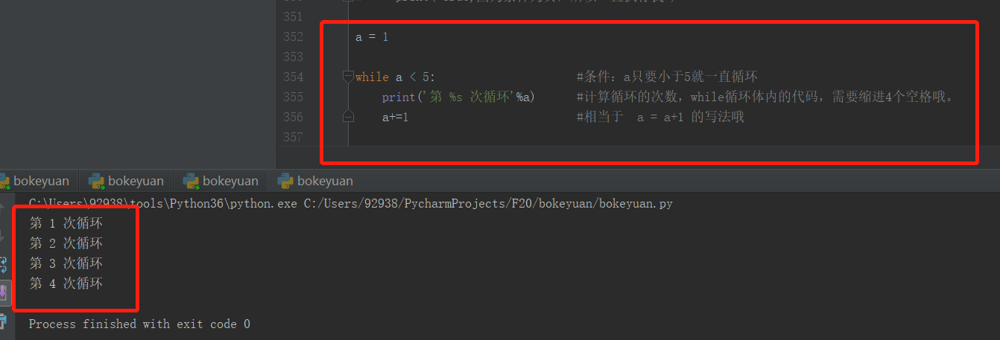
总结：
while 是关键字，后面紧跟条件表达式，然后记住以英文冒号结尾。while是单独的代码块儿，所以下面的内部循环语句 需要缩进哦
啦啦啦啦~~~ 接下来我们看下for循环怎么用：
for循环，可以遍历依次取出sequence类型的数据里面的元素。
for 循环结构：
1 for 变量名 in 循环对象： #循环对象的元素，会依次取出，赋值给变量名
2 循环代码比如我们先来个简单的循环，遍历一个字符串中的所有元素。
1 for one in 'hello': #不是必须写one，可以是a 或者b，你自己想写什么写什么
2 print(one) #for循环，遍历字符串里面的所有元素，会依次赋值给one有多少个元素，就会循环多少次。
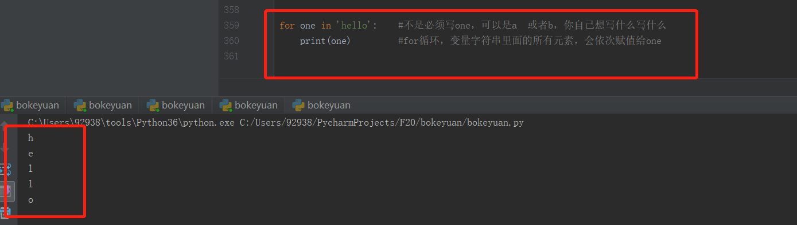
那么我们试试元组？
1 tuple_a = (1,2,3,4) #创建一个与元组
2 for one in tuple_a: #循环遍历元组中的所有元素
3 print(one) #for循环，遍历字符串里面的所有元素，会依次赋值给one同样的会依次取出我们需要的元素，那么list列表遍历，你一定会比葫芦画瓢，来写一个for循环了吧？！如果不会可以留言哦
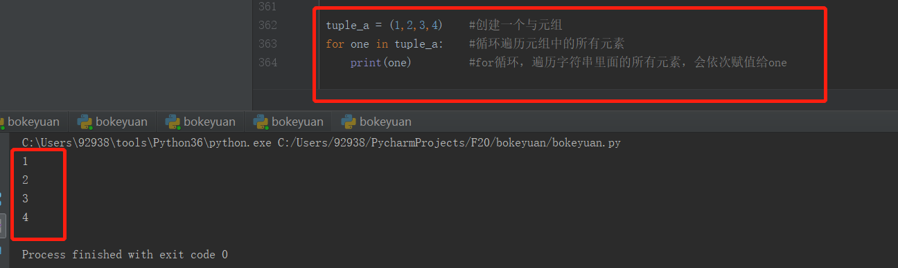
我们可以用for循环写一个循环，用来计算1--5的总和：
1 sum = 0
2 for i in [1,2,3,4,5]:
3 sum += i #第一次是sum = 0 ，i = 1，所以是0+1=1，结果会赋值给sum，然后循环相加
4 print(sum) #print写在循环体内，会每计算一次，打印一次合，所以写在外面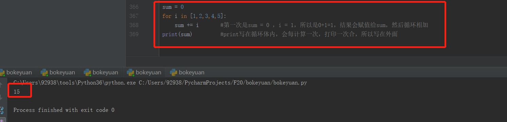
其实，如果我们计算1--100的总和，我们不可能把1--100全部写出来的，python 中提供了一个range()函数，我们可以看看效果，它可以帮我们生成整数序列。
1 sum = 0
2 for i in range(101): #生成的是，1--100的整数，不会包含101哦~~
3 sum += i
4 print(sum) #print写在循环体内，会每计算一次，打印一次合，所以写在外面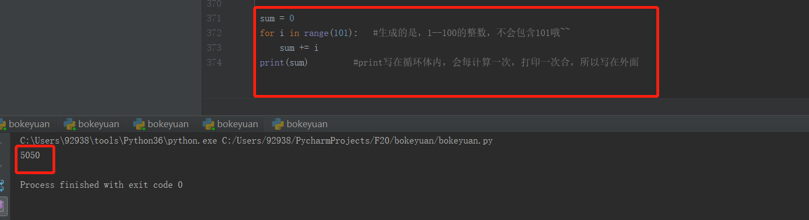
接下来我们看下更有意思的用法---------循环嵌套
在很多场景，我们需要循环里面有循环，这就是循环嵌套，它可以帮我们快速，列出可能性组合
我们看下小案例：
1 a = [1,2,3]
2 b = [4,5,6]
3 for i in a: #第一次取出a列表中的1
4 for j in b: #第一次取出b列表中的4，然后内层循环完毕，才会去外层循环取出2
5 print('%s VS %s'%(i,j)) #第一次先将1和4进行组合对比循环嵌套，是从外向内执行。当内部的循环完毕，才会继续执行外部的循环。
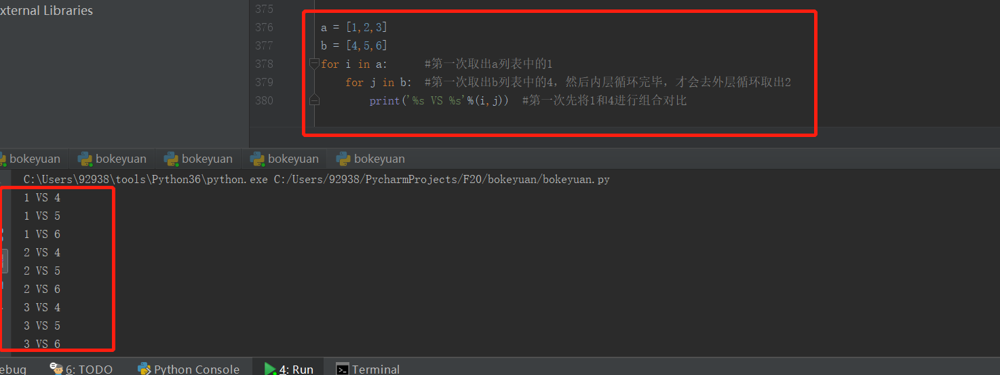
接下来我们看怎么使用关键字 break语句
break语句，在python中可以终止当前循环，如果是嵌套循环，那么也只会终止当前循环
我们看一个小例子：（记住，循环碰见break就会终止当前的循环）
1 a = [1,2,3,4,5]
2 for i in a:
3 if i == 3: #大家记得if开头的是判断条件吧，如果等于3，条件成立，就会执行内部的break语句，终止当前的for循环。
4 break #执行break语句，终止当前的for循环。
5 print(i) #看看都循环出了那些元素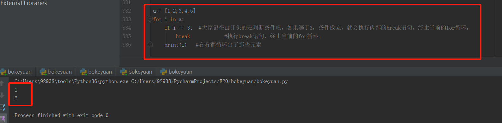
我们看下嵌套循环是怎么终止当前循环？
1 a = [1,2,3]
2 b = [4,5,6]
3 for i in a:
4 for j in b:
5 if j == 5: #判断条件，如果等于5，条件成立，就会执行内部的break语句，终止当前的for循环。
6 break #执行break语句，终止当前的for循环,但是会继续执行外层的循环
7 print(i,j) #看看都循环出了那些元素
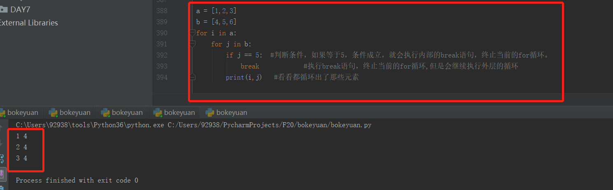
那么？？如果我们把if条件语句不放在第二个内层循环，放到第一层外部循环是什么样呢？
1 a = [1,2,3]
2 b = [4,5,6]
3 for i in a:
4 if i == 2: # 判断条件，如果等于2，条件成立，就会执行内部的break语句，终止当前的for循环。
5 break # 执行break语句，终止当前的for循环,内部循环也会跟着外部被终止而终止
6
7 for j in b:
8 print(i,j) #看看都循环出了那些元素我们发现：外部的for循环被终止后，内部的循环并没有苟且偷生，，，，也会跟着终止掉
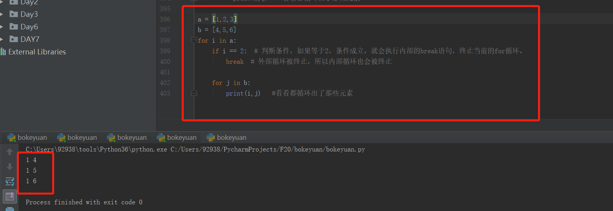
最后我们再看下continue语句
continue语句：它是用来终止当前循环，后面会继续循环。
break语句：终止当前循环，后面的循环也会被切断。
我们看下小案例：
1 a = [1,2,3,4,5]
2 for i in a:
3 if i == 3: #大家记得if开头的是判断条件吧，如果等于3，条件成立
4 continue #执行continue语句，终止当前的循环,后面的4和5还是会执行循环的
5 print(i) #看看都循环出了那些元素，原来只有3被终止了我们再来分析下：
continue语句：它是用来终止当前循环，后面会继续循环。------3被终止后，后面的4和5会继续循环（终止当前循环，不影响后面的循环）
break语句：终止当前循环，后面的循环也会被切断。---------3被终止后，后面的4和5也不会再循环了（终止整个循环）
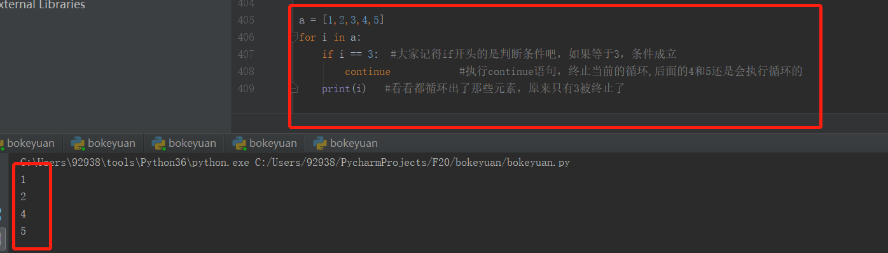
循环就简单的到这里，后面我们用到其他的用法，在细化讲解~~~~~
如果你没有学会，请评论我会讲到你会为止，不然我就一直循环~~~~
----------------来自在坚持路上的新手小白